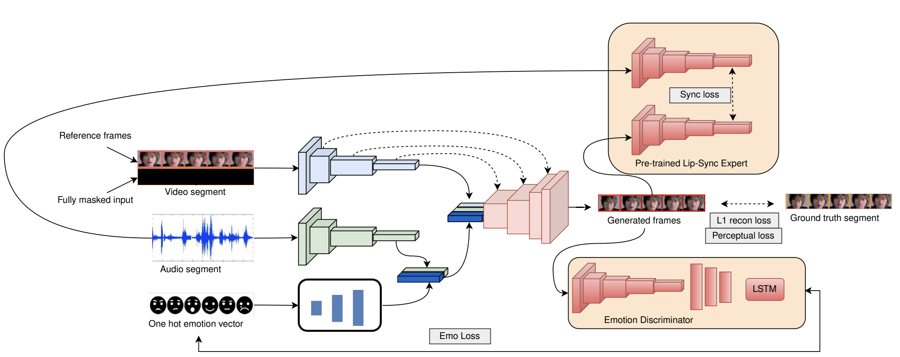
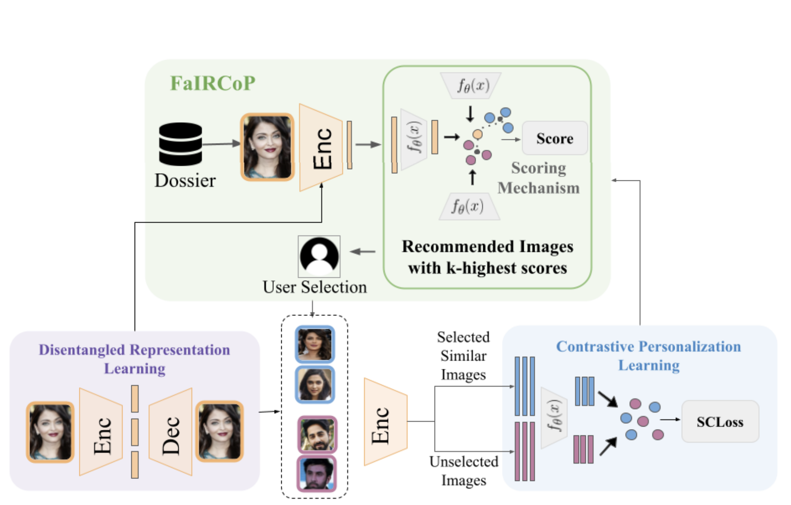
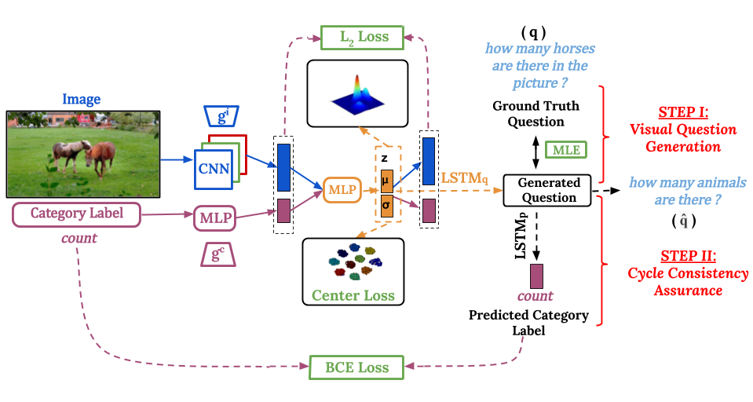
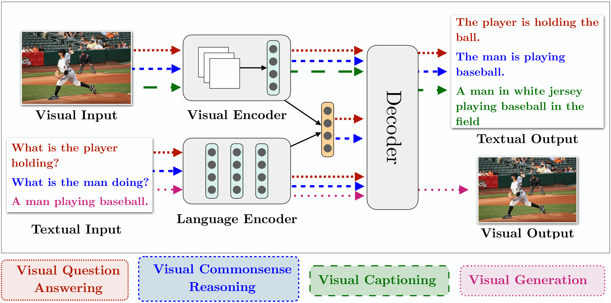

Research
I'm interested in robotics, computer vision, deep learning, and reinforcement learning. Representative papers are highlighted .
Conference Papers
Your browser does not support the video tag.
Your browser does not support the video tag.
SPIN: Simultaneous Perception, Interaction and Navigation
Shagun Uppal ,
Ananye Agarwal ,
Haoyu Xiong ,
Kenny Shaw ,
Deepak Pathak ,
CVPR , 2024
project page
/
arXiv
An end-to-end reactive mobile manipulation framework for robots showcasing whole-body coordination and an active visual system.
Your browser does not support the video tag.
Your browser does not support the video tag.
Dextrous Functional Grasping
Ananye Agarwal ,
Shagun Uppal ,
Kenny Shaw ,
Deepak Pathak ,
CoRL , 2023
project page
/
arXiv
A modular appraoch for dextrous functional grasping for in-the-wild objects using a modular approach of passive data and sim2real learning.

Emotional Talking Faces: Making Videos More Expressive and Realistic
Sahil Goyal ,
Shagun Uppal ,
Sarthak Bhagat ,
Yi Yu ,
Yifang Yin ,
Rajiv Ratn Shah ,
ACM MM Asia , 2022; Workshop on AI for Creative Video Editing and Understanding, ICCV 2023
Workshop on Multimedia Content Generation and Evaluation: New Methods and Practice (McGE), MM 2023
Best Demo Paper Award; 300+ stars on GitHub
project page
/
code
/
video
/
paper
A framework for generating expressive talking face videos with controllable emotions and realistic facial animations.

Suspect Identification Framework using Contrastive Relevance Feedback
Devansh Gupta ,
Aditya Saini ,
Sarthak Bhagat ,
Shagun Uppal ,
Rishi Raj Jain ,
Drishti Bhasin ,
Ponnurangam Kumaraguru ,
Rajiv Ratn Shah ,
CoRL , 2023
paper
/
video
A framework for suspect identification using contrastive relevance feedback to improve search accuracy through iterative refinement.
Distilling Motion Planner Augmented Policies into Visual Control Policies for Robot Manipulation
I-Chun Arthur Liu* ,
Shagun Uppal* ,
Gaurav S. Sukhatme ,
Joseph J. Lim ,
Peter Englert ,
Youngwoon Lee ,
CoRL , 2021
project page
/
arXiv
A policy distillation approach (MoPA-PD) for solving complex manipulation tasks in obstructed environments using visual observations in real-time.
Disentangling Multiple Features in Video Sequences using Gaussian Processes in Variational Autoencoders
Sarthak Bhagat ,
Shagun Uppal ,
Zhuyun Yin,
Nengli Lim ,
ECCV , 2020
paper
/
code
/
video
A variational autoencoder (MGP-VAE) which uses Gaussian processes (GP) to model the latent space for the unsupervised learning of disentangled representations in video sequences.
PrOSe: Product of Orthogonal Spheres Parameterization for Disentangled Representation Learning
Ankita Shukla ,
Shagun Uppal* ,
Sarthak Bhagat* ,
Saket Anand ,
Pavan Turaga ,
BMVC , 2019
paper
Learning disentangled latent space representations as a parameterized product of orthogonal spheres for images.

C3VQG: Category Consistent Cyclic Visual Question Generation
Shagun Uppal ,
Anish Madan ,
Sarthak Bhagat ,
Yi Yu ,
Rajiv Ratn Shah
ACM MM Asia , 2020; CVPR Workshop on VQA and Dialogue, 2020
paper
/
code
/
video
A weakly-supervised VAE setting for question generation using category consistent cyclic loss and structured latent space constraints.
Geometry of Deep Generative Models for Disentangled Representations
Ankita Shukla ,
Sarthak Bhagat* ,
Shagun Uppal* ,
Saket Anand ,
Pavan Turaga ,
ICVGIP , 2018
paper
Analysis of latent spaces of different models of disentanglement under the lens of Riemannian Geometry.
Journal Papers

Multimodal Research in Vision and Language: A Review of Current and Emerging Trends
Shagun Uppal* ,
Sarthak Bhagat* ,
Devamanyu Hazarika ,
Navonil Majumdar ,
Soujanya Poria ,
Roger Zimmermann ,
Amir Zadeh
A detailed overview of the latest trends in research pertaining to visual and language modalities.
Workshop Papers
DisCont: Self-Supervised Visual Attribute Disentanglement using Context Vectors
Sarthak Bhagat* ,
Vishaal Udandarao* ,
Shagun Uppal*
PTSGM Workshop, ECCV , 2020; MLI4SD Workshop, ICML , 2020
A selfsupervised framework to disentangle multiple factors of variation by exploiting the structural inductive biases within images.